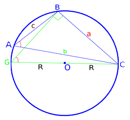

Бездна Геометрии
Теоремы
a / sin∠A = b / sin∠B = c / sin∠C = 2R
где a, b, c — стороны треугольника, , β, γ — противолежащие этим сторонам углы, а R — радиус окружности, которая описана вокруг треугольника.
Д. п. Опишем данный треугольник, а также построим диаметр СG.
В △BCG ∠CBG = 90⁰, т.к. лежит против диаметра =>
BC = sin∠BGC * CG = sin∠BCG * 2R ;
Т.к. ∠BGC и ∠BAC(∠A) опираются на одну и ту же дугу ∪BC, то эти углы равны =>
sin∠A = sin∠BGC => BC = sin∠A * 2R. По обычной теорме синусов
sin∠A / a = sin∠B / b = sin∠C / c, то и a / sin∠A = b / sin∠B = c / sin∠C,
но a / sin∠A = (2R * sin∠A) / sin∠A = 2R =>
a / sin∠A = b / sin∠B = c / sin∠C = 2R
